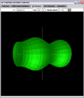
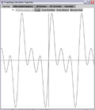
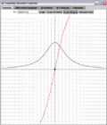
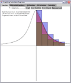
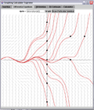
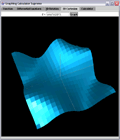

Graphing Calculator
Supreme BETA
A graphing calculator and math visualization program for entry level
calculus.
VIEW LICENSE
Features and how to use:
- Rotate a curve
about a line:
- Graph and rotate any y = f(x) function about a line (X = ... or
Y =
...) on any domain [a,b]
- Click and drag to spin the object.
- Option for wireframe display.
- Simple function
graphing:
- Click and drag to zoom in, to restore default window
(-10,10,-10,10) click window -> default window
 Draw Derivative:
Draw Derivative:
- Draw the derivative of any y = f(x) function (in green) along
with the graph of the function itself
- Draw Integral:
- Visualize the integral of any y = f(x) function by drawing it's
slope field and one particular solution (in red)
- Riemann
Sum:
- Display and calculate left, right, and trapezoidal Riemann
Sums.
- Differential
Equations
- Draw slope fields
- Draw one or many particular solutions (in red)
- Click (and drag) to draw particular solutions through the
cursor
point
- Cartesian
3D
- Display Z = f(X,Y) 3D functions
- Click and drag to spin the object
- Option for wireframe display
- Simple Calculator
- Simple calculator: type the math and it gives you answers
- Generates a table of values (-10 < X < 10) if you input a
function f(x)
FROM THE AUTHOR
If you have interest in using this program for
educational purposes, please feel free to contact me
( curran.kelleher@gmail.com ) and tell me what you think of it, or
any suggestions you may have for improving it (additional features that
would be useful to you, bugs in the program, suggestions to improve
usability, corrections of terminology, etc.)
Graphing Calculator Supreme
BETA version 1.0, Copyright (C) 2005 Curran
Kelleher